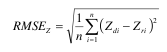
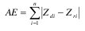
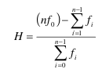

[ Prev ]
[ Index ]
[ Next ]
05 - Hodnocení přesnosti DMR
Created Neděle 05 červen 2011
Nejedná se o výpisky z prezentace, ale o zkopírování prezentace
- Klasifikace metod:
- variabilita:
- neprostorové: střední kvadratická chyba, celková aboslutní chyby, hammoct index, ...
- prostorové: hammock plot
- shlukování:
- neprostorové: Moranovo I, G statistika
- prostorové: LISA, Gi*
- závoslost (regresní analýzy):
- neprostorové OLS regrese
- prostorové: GWR
- střední kvadratická chyba (RMSE - root mean square error)
- globální metoda hodnocní kvality DMR
- měří rozptyl rozdělení četnosti echylek mezů původními výškovými daty a daty DMR
- ideální hodnota by neměla překročit polovinu hodnoty intervalu původních vrstevnic

- kde: • Zdi je i-tá hodnota nadmořské výšky z povrchu DMR
- Zri je korespondující původní nadmořská výška
- n je počet kontrolovaných bodů
- celková absolutní chyba
- vyjadřuje skutečnou velikost (sumu) všech odchylek od referenčního gridu v kladném i záporném směru

- kde: • Zdi je i-tá hodnota nadmořské výšky z povrchu DMR
- Zri je korespondující původní nadmořská výša
- hammock plot
- globální metoda hodnocení kvality DMR
- rozsah hodnot se pohybuje v intervalu <-1, i-1> – ideální hodnoty – okolo nuly

- kde: • n je interval vrstevnic
- f0 je četnost mod0 (četnost pixlů se zbytkem 0)
- fi je četnost ostatních mod
- základní statistické charakteristiky
- průměrná hodnota
- pokud vstupními daty byly vrstevnice – srovnání průměrné hodnoty nadmořské výšky DMR s váženým průměrem z hodnot původních vrstevnic, kdy váha je určena délkou příslušných vrstevnic
- rozsah dat
- závisí na použité interpolační metodě
- významné překročení minimální či maximální hodnoty v porovnání se vstupními daty indikuje přítomnost hrubých chyb
- minimální, maximální hodnota, ...
- shlukování
- 1. Určení obsahu analyzovaného atributu
a. Hodnota = intenzita výskytu prvků, velikost jevu
b. Hodnota = pouze výskyt/nevýskyt → agregace dat
2. Výběr koncepce vyjádření prostorových vztahů
- na základě znalosti analyzovaného jevu
3. Jakaá je základní otázka?
a. Kde se prostorově shlukují vysoké/nízké hodnoty jevu? → 1a
Kde je nejvíce výskytů jevu? → 1b
b. Kde se nachází neočekávané vysoké hodnoty?
- očekáváme, že výskyt jevu je funkcí výskytu jiného jevu (atributu)
- jako vstupní atribut je použit poměr těchto dvou jevů
- výběr základního koncepteptu prostorových vztahů (obr. viz prezentace)
- inverzní vzdálenost (Inverse distance)
- se vzrůstající vzdáleností klesá vliv hodnot
- pro spojitá data je vhodnější euklidovský typ vzdálenosti
- u větších souborů je třeba definovat prahovou vzdálenost
- konstantní vzdálenost (Distance band)
- analýzy jsou prováděny vzhledem k těm sousedícím prvkům, které se nachází do určité prahové vzdálenosti. Prvky za touto vzdáleností nemají na výpočty vliv.
- časté využití u Hot spot analýz
- zóna netečnosti (Zone of indifference)
- Prvky do určité (prahové) vzdálenosti jsou zahrnovány do analýz všechny, za touto hodnotou vliv prvků rychle klesá.
- Prahová vzdálenost zde odpovídá konstantní vzdálenosti, takže do analýzy vstupují všechny prvky a proto není vhodné použít tuto metodu na velké soubory dat.
- výběr základního konceptu prostorových vztahů
- možnosti určení prahové vzdálenosti:
- vzdálenost, která odráží maximální prostorovou autokorelaci – provést několikrát analýzu autokorelace pro různé vzdálenosti a vybrat tu, pro kterou bude Z score největší (K fce)
- vzdálenost zajišťující daný minimální počet sousedů (Calculate Distance Band from Neighbor Count)
- empiricky
- styčné polygony (polygon contiguity)
- pro polygonové vrstvy
- výsledek analýzy pro cílový polygon je ovlivněn pouze polygony sousedícími hranou či alespoň bodem (vrcholem)
- vhodné zejména pro polygony o přibližně stejné velikosti a rovnoměrném rozmístění
- K nejbližších sousedů (K Nearest Neighbors)
- výsledek analýzy pro cílový prvek je ovlivněn hodnotami K nejbližších sousedů
- každý prvek bude mít minimálně K počet sousedů a to i tehdy, kdy je hustota vstupních prvků různá
- Delaunay triangulace (Delaunay Triangulation)
- sousedy cílového prvku (bodu) jsou vrcholy trojúhelníků, jejichž součástí je i cílový bod
- vhodné tehdy, kdy je hustota vstupních prvků různá nebo zde existují izolované „ostrovy“ (např. polygony)
- matice prostorových vah
- kdy je vhodné vytvořit matici prostorových vah:
- velké datové soubory! (více jak 3 000 prvků)
- při analýze více jak jednoho atributu
- při výpočtu lokální i globální verze statistické analýzy
- jak vytvořit matici:
- ASCII soubor se speciálním formátováním
- pomocí nástroje Generate Spatial Weights Matrix (.swm )
- matice prostorových vah je N×N tabulka, kde N je počet prvků v datasetu
- binární nebo variabilní vážení
- prahová vzdálenost - obr. viz prezentace
- standardizace
- doporučována, pokud rozložení vstupních prvků je zkresleno způsobem vzorkování
- každá váha podělena „row sum“ (součtem vah všech sousedních prvků)
- obecné předpoklady
- data musí mít definován souřadnicový systém
- funkce pracují v jednotkách definovaných při nastavování souřadnicového systému
- pracuje s body (nebo centroidy z linií a polygonů)
- pracuje pouze s kladnými hodnotami
- vyžaduje variabilitu vstupních hodnot
- vstupní soubor nesmí obsahovat null hodnoty
- Z score a p-value
- nulová hypotéza: hodnoty (prvky) jsou v území rozmístěny náhodně (neexistuje zde prostorové shlukování)
- Z score je test statistické významnosti, který nám umožní rozhodnout, zda přijmout či zamítnout nulovou hypotézu
- P-value je pravděpodobnost, se kterou je zamítnuta nulová hypotéza
- Pokud výsledkem analýzy je malá hodnota p-value a velmi vysoká či nízká (záporná) hodnota Z score znamená to, že je velmi nepravděpodobné, že pozorovaný (analyzovaný) model je jedním z teoretických náhodných prostorových modelů jak bylo předpokládáno nulovou hypotézou a lze ji tedy zamítnout.
- P-value 0,05 ~ Z score -1,96 a +1,96 STD
- shlukování - globální metody
- základem je nulová hypotéza, která říká, že prvky (hodnoty prvků) mají náhodné rozdělení
- výpočet p-value, Z score, příslušného indexu
- Vykazují data (hodnoty) prostorové shlukování?
- K-function – měří míru prostorového shlukování pro různé hodnoty vzdálenosti vymezující sousedství mezi prvky
- Moranovo I
- měří prostorovou autokorelaci na základě vzdálenosti mezi prvky a hodnot jejich atributů
- výsledkem je Moranovo I a odpovídající Z score a p-value (které vyjadřují statistickou významnosti Moranova I)
- hodnota Moranova I vyjadřuje, zda model vykazuje shlukování, rozptyl nebo náhodnost rozdělení
- pokud Z score a p-value poukazují statistickou významnost, pak kladná hodnota Moranova I (> 0, okolo +1) znamená tendenci ke shlukování, zatímco záporné Moranovo I (< 0, okolo -1) tendenci k rozptylu
- Getis - Ord G
- měří stupeň shlukování vysokých či nízkých hodnot
- výsledkem je General G index a odpovídající Z score a p-value
- hodnoty Z score blízké nule znamenají, že v datech není patrné shlukování
- čím vyšší (nižší) je hodnota Z score, tím je shlukování intenzivnější
- kladné hodnoty znamenají shlukování vysokých hodnot
- záporné nízkých hodnot
- shlukování - lokální metody
- analýza shluků, tj. lokalizace statisticky významných hot spots, cold spots či prostorových outliers
- umožňují vizualizaci rozložení a rozsahu prostorových shluků či outliers
- LISA
- identifikuje shluky (bodů) s podobnými hodnotami a shluky s rozdílnými hodnotami (nezabývá se velikostí hodnot)
- lokální Moranovo I, LISA = local indicators of spatial association
- výsledkem je:
- hodnota indexu lokálního Moranova I
- Z score a p-value
- typový kód shluku (cluster type code)
- pro každý prvek zvlášť je na základě Z score a p-value, které vyjadřují statistickou významnost, rozhodováno, zda bude potvrzena či zamítnuta nulová hypotéza
- potvrzení či zamítnutí podobnosti (či rozdílnosti) hodnot prvku a jeho okolí
- vysoká kladná hodnota Z score a LISA pro daný prvek znamená, že se v jeho okolí nachází prvky s podobnými hodnotami, prvek je tedy součástí shluku
- nízká negativní hodnota Z score a LISA pro daný prvek znamená, že se jedná o statisticky významný (při 0,05) prostorový outlier
- 1. Hot spot: HH → v okolí daného prku došlo ke shluku vysokých hodnot
- 2. Cold spot: LL → v okolí daného prvku došlo ke shluku nízkých hodnot
- 3. Outlier:
- HL → prvek s vysokou hodnotou je obklopen prvky s nízkou hodnotou
- LH → prvek s nízkou hodnotou je obklopen prvky s vysokou hodnotou
- 4. lokace bez významné autokorelace
- Getis - Ord lokální Gi*
- identifikuje shluky vysokých hodnot (hot spots) a shluky s nízkými hodnotami (cold spots)
- slouží k identifikaci rozmístění prostorových shluků vysokých hodnot (hot spots) a prostorových shluků nízkých hodnot (cold spots)
- výstupem jsou hodnoty Z score a p-value pro každý prvek, které určují statistickou významnost prostorového shlukování (Gi* je přímo hodnota Z score)
- vysoká kladná hodnota Z score a hodnota p-value < 0,05 pro daný prvek znamená existenci prostorového shluku vysokých hodnot v okolí → hot spot
- nízká záporná hodnota Z score a hodnota p-value < 0,05 pro daný prvek znamená existenci prostorového shluku nízkých hodnot v okolí → cold spot
- čím je Z score větší/menší, tím je shlukování intenzivnější
- Z score blízké nule znamená, že se zde nevyskytuje žádný zjevný shluk
- Lokální součet hodnoty prvku a hodnot jeho okolí je proporcionálně srovnáván se součtem hodnot všech prvků v území. Pokud je lokální součet značně odlišný od očekávaného lokálního součtu, znamená to, že tento rozdíl nemůže vzniknout náhodně a jedná se tedy o statisticky významný výsledek (Z score).
Backlinks: